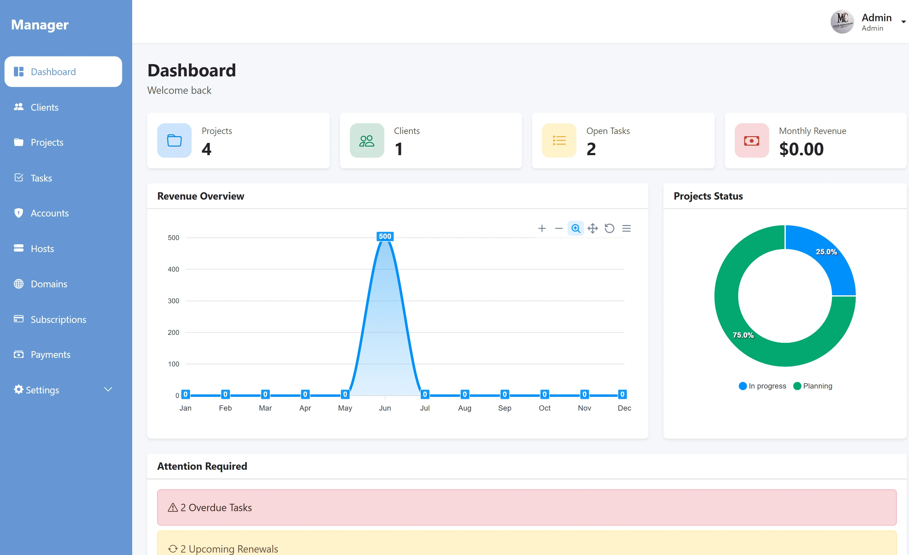
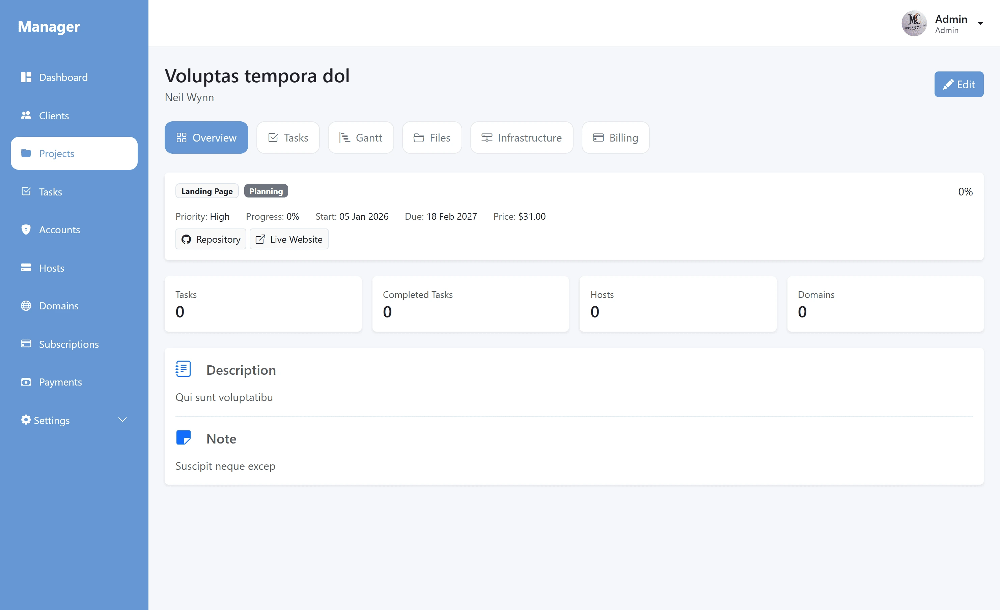
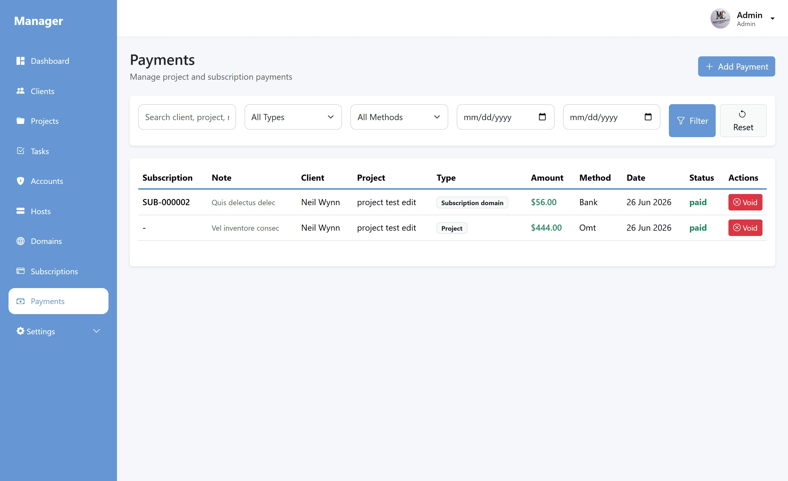
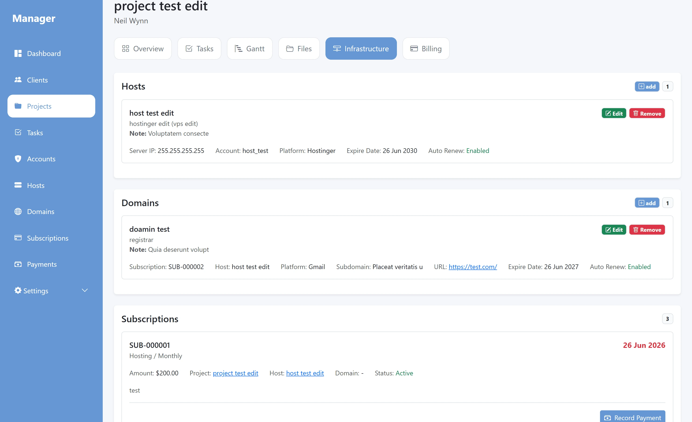

my-manager
A personal business organization system designed to keep projects, tasks, payments, expenses, accounts, hosting, domains and subscriptions in one organized workspace.

Too many important things in too many places.
Scattered Notes
Important project details and reminders could be spread across different places and difficult to find.
Things Easy to Forget
Hosting, domains, subscriptions and other recurring responsibilities needed a clearer way to be tracked.
Financial Tracking
Payments and expenses needed to stay connected to the work they belonged to instead of being separate notes.
Lost Information
Previous experience with unorganized data made it clear that important information needed one reliable place.
One workspace for everything around the work.
Projects
- Projects
- Tasks
- Accounts
Money
- Payments
- Expenses
- Financial Records
Renewals
- Hosting
- Domains
- Subscriptions
Built from problems I had already experienced.
I had experienced the problems of unorganized work, lost information, trying to remember important details, and searching through different places for notes. When planning to return to freelance work, I wanted one system that could keep the important parts of that work organized from the beginning.
The information needed to keep work under control.
Projects
Keep project information organized in one central place.
Tasks
Track the work that needs to be completed for each project.
Payments
Keep records of money received from work and projects.
Expenses
Record costs associated with work and business activity.
Accounts
Store and organize account-related information.
Hosting
Keep hosting information and services organized.
Domains
Track domains and important information around them.
Subscriptions
Keep recurring services and subscriptions visible instead of depending on memory.
A workspace designed around organization.



Designed and developed independently.
I designed the database, application structure, backend functionality and user interface independently. The system also includes authentication and role/permission management.
Built as a complete full-stack application.
The system was developed using the same stack I use for custom business web applications.
Username: admin
Password: admin123